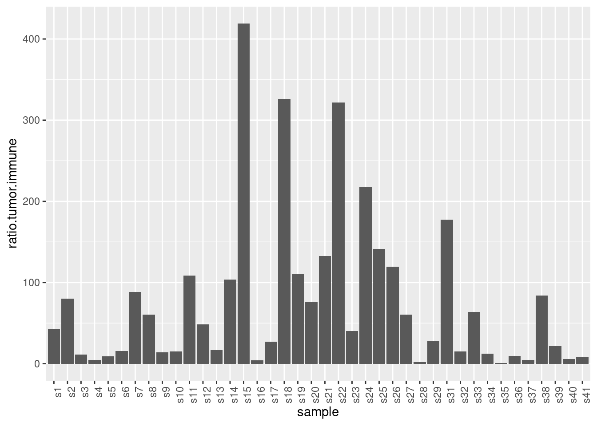
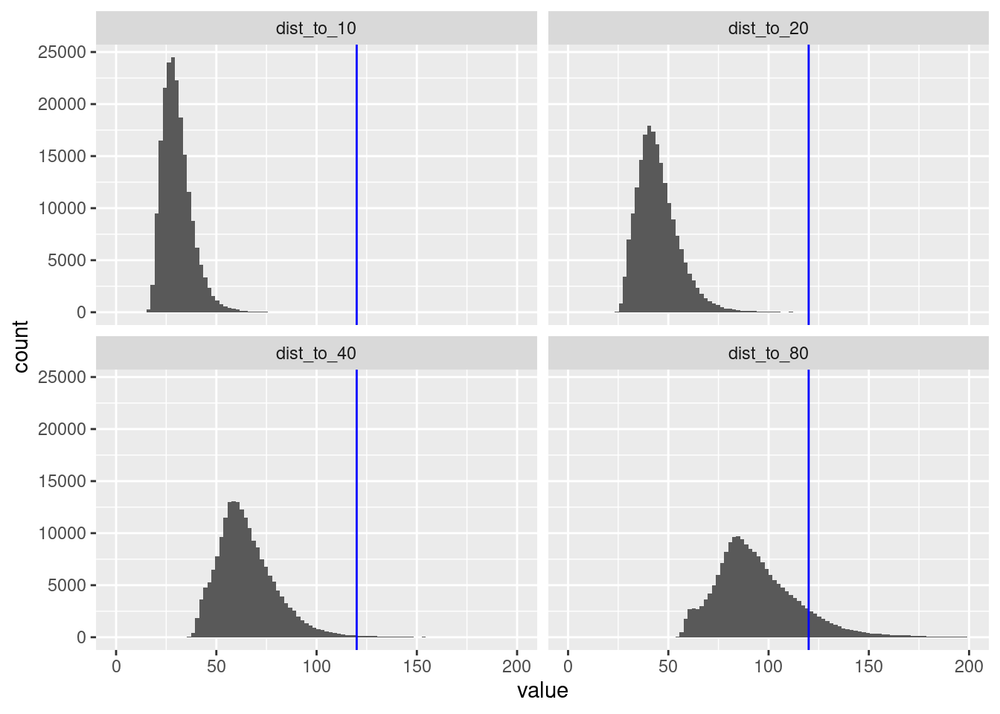

Exploratory Data Analysis MiBi
Last updated: 2021-10-13
Checks: 5 2
Knit directory: mibi_analysis/
This reproducible R Markdown analysis was created with workflowr (version 1.6.2). The Checks tab describes the reproducibility checks that were applied when the results were created. The Past versions tab lists the development history.
The R Markdown is untracked by Git. To know which version of the R Markdown file created these results, you’ll want to first commit it to the Git repo. If you’re still working on the analysis, you can ignore this warning. When you’re finished, you can run wflow_publish to commit the R Markdown file and build the HTML.
Great job! The global environment was empty. Objects defined in the global environment can affect the analysis in your R Markdown file in unknown ways. For reproduciblity it’s best to always run the code in an empty environment.
The command set.seed(20211011) was run prior to running the code in the R Markdown file. Setting a seed ensures that any results that rely on randomness, e.g. subsampling or permutations, are reproducible.
Great job! Recording the operating system, R version, and package versions is critical for reproducibility.
Nice! There were no cached chunks for this analysis, so you can be confident that you successfully produced the results during this run.
Using absolute paths to the files within your workflowr project makes it difficult for you and others to run your code on a different machine. Change the absolute path(s) below to the suggested relative path(s) to make your code more reproducible.
| absolute | relative |
|---|---|
| ~/Saez/workflowr_projects/mibi_analysis/ | . |
Great! You are using Git for version control. Tracking code development and connecting the code version to the results is critical for reproducibility.
The results in this page were generated with repository version 543c74c. See the Past versions tab to see a history of the changes made to the R Markdown and HTML files.
Note that you need to be careful to ensure that all relevant files for the analysis have been committed to Git prior to generating the results (you can use wflow_publish or wflow_git_commit). workflowr only checks the R Markdown file, but you know if there are other scripts or data files that it depends on. Below is the status of the Git repository when the results were generated:
Ignored files:
Ignored: data/alternative_coordinates.RDS
Ignored: data/cellData.csv
Ignored: data/coordinates.csv
Ignored: data/misty_results_earth_smp.RDS
Ignored: data/misty_results_smp.RDS
Ignored: data/misty_views_smp.RDS
Ignored: data/patient_class.csv
Ignored: data/raw_tiffs/
Ignored: old_files/
Ignored: results/
Untracked files:
Untracked: analysis/MIBI_Analysis.Rmd
Unstaged changes:
Modified: .gitignore
Deleted: analysis/EDA_MIBI.Rmd
Note that any generated files, e.g. HTML, png, CSS, etc., are not included in this status report because it is ok for generated content to have uncommitted changes.
There are no past versions. Publish this analysis with wflow_publish() to start tracking its development.
Set up
Messages will be hidden and the output collapsed to make the Rmd more clear.
knitr::opts_chunk$set(echo = TRUE, collapse = TRUE, message = FALSE)
knitr::opts_knit$set(root.dir = "~/Saez/workflowr_projects/mibi_analysis/")Loaded Packages.
library(mistyR)
library(future)
plan("multisession", workers=14)
library(tidyverse)Loading and Processing Data
input <- read_csv("data/cellData.csv")
# See description in Readme
group.trans <- c("1" = "Unidentified", "2" = "Immune", "3" = "Endothelial",
"4" = "Mesenchymal-like", "5" = "Tumor",
"6" = "Keratin-positive tumor")
immune.group.trans <- c("0" = "Non-Immune?", "1" = "Tregs", "2" = "CD4 T", "3" = "CD8 T",
"4" = "CD3 T", "5" = "NK", "6" = "B",
"7" = "Neutrophils", "8" = "Macrophages",
"9" = "DC", "10" = "DC/Mono", "11" = "Mono/Neu",
"12" = "Other immune")
raw_data <- input %>%
mutate(Group = group.trans[as.character(Group)]) %>%
mutate(immuneGroup = immune.group.trans[as.character(immuneGroup)])
raw_data %>% slice_head(n=6)
# A tibble: 6 × 57
SampleID cellLabelInImage cellSize C Na Si P Ca Fe
<dbl> <dbl> <dbl> <dbl> <dbl> <dbl> <dbl> <dbl> <dbl>
1 1 2 146 0 -0.591 0.875 -2.58 -0.806 -0.234
2 1 3 102 0 -0.499 0.0175 -1.22 -0.502 -1.34
3 1 4 43 0 -1.49 -0.630 -1.91 -1.23 -1.39
4 1 5 211 0 -1.01 -0.532 -1.74 -0.945 -1.10
5 1 6 177 0 0.158 -0.710 0.517 -0.0963 -1.05
6 1 7 159 0 -0.133 -0.797 -0.191 -0.188 -1.08
# … with 48 more variables: dsDNA <dbl>, Vimentin <dbl>, SMA <dbl>,
# Background <dbl>, B7H3 <dbl>, FoxP3 <dbl>, Lag3 <dbl>, CD4 <dbl>,
# CD16 <dbl>, CD56 <dbl>, OX40 <dbl>, PD1 <dbl>, CD31 <dbl>, PD-L1 <dbl>,
# EGFR <dbl>, Ki67 <dbl>, CD209 <dbl>, CD11c <dbl>, CD138 <dbl>, CD163 <dbl>,
# CD68 <dbl>, CSF-1R <dbl>, CD8 <dbl>, CD3 <dbl>, IDO <dbl>, Keratin17 <dbl>,
# CD63 <dbl>, CD45RO <dbl>, CD20 <dbl>, p53 <dbl>, Beta catenin <dbl>,
# HLA-DR <dbl>, CD11b <dbl>, CD45 <dbl>, H3K9ac <dbl>, Pan-Keratin <dbl>, …Add coordinates of the cells.
Doing it in R takes quite some time but offers more control that the center of mass function in scipy (python).
if ("alternative_coordinates.RDS" %in% list.files("data")) {
alternative.coord <- readRDS("data/alternative_coordinates.RDS")
} else {
library(tiff)
lbs <- c(1:29, 31:41)
alternative.coord <- furrr::future_map_dfr(lbs, function(id) {
print(id)
# Read in raw matrix (in tiff format)
tiff <- readTIFF(paste0("/home/philipp/data/saez/p", id, "_labeledcellData.tiff"),
as.is = TRUE)
seq.rows <- seq_len(nrow(tiff))
seq.cols <- seq_len(ncol(tiff))
# important: map over all unique values here! (but I removed 1 and 2)
cell.ids <- unique(as.vector(tiff))[-which(unique(as.vector(tiff)) %in% c(0,1))]
map_dfr(cell.ids, function(i) {
if (i %% 100 == 0) print(i)
# Convert to binary matrix with TRUE and FALSE
binary <- (tiff == i)
s <- sum(binary)
# Calculate center of mass
c(id = id,
i = i,
x.center = sum(seq.rows * rowSums(binary)) / s,
y.center = sum(seq.cols * colSums(binary)) / s
)
})
})
saveRDS(alternative.coord, file = "data/alternative_coordinates.RDS")
}Join the coordinates with the meta data.
data <- raw_data %>%
inner_join(alternative.coord, by = c("SampleID" = "id",
"cellLabelInImage" = "i")) %>%
rename(row = x.center, col = y.center)
# IDs only in image for sample 40
# I guess these were not real cells, so I can ignore them?Diving into sample 40. Let’s check which cell IDs where in the tiff but not in the meta data. Maybe those spots turned out not be cells in the end (segmentation errors?).
dplyr::setdiff(alternative.coord %>% filter(id == 40) %>% pull(i),
data %>% filter(SampleID == 40) %>% pull(cellLabelInImage))
[1] 41 44 46 56 64 70 73 76 77 80 91 102 106 107 116
[16] 118 125 129 130 134 138 139 144 147 159 163 173 176 182 191
[31] 192 206 209 212 221 235 236 239 241 243 245 247 251 252 276
[46] 278 289 290 294 299 301 310 342 347 350 352 353 354 379 384
[61] 394 403 405 406 414 421 423 437 438 447 450 473 481 487 488
[76] 490 493 495 504 511 523 534 535 546 556 559 561 568 575 581
[91] 587 594 597 614 633 639 641 642 648 662 670 672 697 704 705
[106] 709 710 720 726 730 746 748 757 760 768 772 775 790 791 804
[121] 807 810 816 821 836 881 889 895 896 912 915 917 921 927 934
[136] 939 940 942 947 960 975 999 1007 1015 1028 1037 1039 1049 1050 1056
[151] 1070 1081 1088 1090 1096 1097 1098 1099 1115 1125 1133 1135 1141 1142 1143
[166] 1144 1146 1151 1166 1176 1178 1181 1206 1224 1228 1229 1239 1243 1246 1249
[181] 1261 1288 1299 1304 1322 1324 1328 1330 1334 1337 1339 1340 1343 1346 1348
[196] 1357 1363 1366 1369 1373 1379 1387 1396 1401 1409 1410 1419 1420 1421 1432
[211] 1476 1480 1481 1527 1532 1560 1563 1569 1593 1610 1649 1674 1708 1719 1720
[226] 1733 1744 1747 1768 1773 1777 1795 1800 1824 1846 1886 1890 1901 1905 1907
[241] 1913 1916 1923 1962 1994 1996 1997 1999 2005 2030 2037 2041 2049 2055 2060
[256] 2084 2087 2120 2126 2139 2153 2155 2164 2175 2185 2190 2204 2214 2225 2228
[271] 2241 2253 2262 2268 2281 2288 2289 2295 2306 2315 2318 2319 2320 2327 2348
[286] 2360 2387 2388 2397 2399 2414 2417 2432 2446 2451 2464 2475 2484 2489 2500
[301] 2501 2502 2508 2514 2524 2535 2536 2539 2545 2567 2569 2581 2596 2599 2600
[316] 2603 2617 2618 2623 2627 2631 2632 2636 2655 2674 2679 2680 2688 2714 2716
[331] 2727 2743 2749 2768 2774 2781 2783 2784 2789 2796 2798 2799 2805 2808 2812
[346] 2822 2824 2843 2844 2847 2853 2862 2864 2865 2878 2880 2896 2899 2901 2905
[361] 2926 2946 2951 2958 2968 2990 3015 3019 3027 3031 3032 3033 3055 3084 3098
[376] 3102 3112 3145 3162 3186 3195 3213 3226 3227 3236 3264 3272 3285 3293 3294
[391] 3301 3344 3346 3347 3361 3375 3392 3394 3397 3398 3400 3414 3451 3438 3443
[406] 3450 3455 3462 3476 3481 3511 3517 3522 3524 3532 3534 3539 3541 3542 3568
[421] 3586 3587 3588 3600 3609 3610 3613 3620 3638 3636 3649 3659 3664 3665 3678
[436] 3680 3688 3696 3703 3704 3709 3711 3716 3722 3737 3742 3765 3772 3789 3794
[451] 3797 3813 3819 3820 3826 3831 3843 3857 3870 3883 3888 3899 3905 3919 3921
[466] 3922 3925 3928 3943 3947 3948 3957 3960 3974 3976 3989 3991 4005 4007 4019
[481] 4021 4036 4039 4042 4053 4067 4068 4075 4076 4094 4110 4112 4117 4124 4149
[496] 4168 4169 4173 4177 4180 4182 4183 4201 4203 4213 4216 4226 4251 4263 4273
[511] 4278 4279 4285 4287 4302 4308 4333 4350 4385 4391 4396 4414 4421 4429 4442
[526] 4447 4454 4473 4494 4499 4501 4518 4527 4534 4542 4562 4570 4578 4575 4579
[541] 4581 4589 4595 4597 4603 4615 4622 4628 4634 4645 4651 4662 4681 4685 4696
[556] 4702 4704 4707 4716 4717 4719 4734 4737 4752 4756 4759 4764 4767 4769 4783
[571] 4800 4835Before proceeding with the analysis, check whether we have any NAs.
stopifnot(sum(map_int(colnames(data), ~ sum(is.na(data[[.x]])))) == 0)Split the data into expression matrix and meta data.
meta <- data %>%
select(c(1:3, 53:59))
meta %>% slice_head(n=6)
# A tibble: 6 × 10
SampleID cellLabelInImage cellSize tumorYN tumorCluster Group immuneCluster
<dbl> <dbl> <dbl> <dbl> <dbl> <chr> <dbl>
1 1 2 146 1 0 Keratin… 0
2 1 3 102 0 0 Immune 46
3 1 4 43 1 0 Keratin… 0
4 1 5 211 1 0 Keratin… 0
5 1 6 177 0 0 Immune 75
6 1 7 159 0 0 Immune 46
# … with 3 more variables: immuneGroup <chr>, row <dbl>, col <dbl>
expr <- data %>%
select(4:52)
expr %>% slice_head(n=6)
# A tibble: 6 × 49
C Na Si P Ca Fe dsDNA Vimentin SMA Background
<dbl> <dbl> <dbl> <dbl> <dbl> <dbl> <dbl> <dbl> <dbl> <dbl>
1 0 -0.591 0.875 -2.58 -0.806 -0.234 -1.31 -0.822 -0.378 -0.843
2 0 -0.499 0.0175 -1.22 -0.502 -1.34 0.523 -0.822 -0.378 -0.377
3 0 -1.49 -0.630 -1.91 -1.23 -1.39 -1.78 -0.822 -0.378 -0.0894
4 0 -1.01 -0.532 -1.74 -0.945 -1.10 -0.0579 -0.822 -0.378 -0.204
5 0 0.158 -0.710 0.517 -0.0963 -1.05 0.355 -0.822 -0.378 1.10
6 0 -0.133 -0.797 -0.191 -0.188 -1.08 1.01 -0.822 -0.310 1.14
# … with 39 more variables: B7H3 <dbl>, FoxP3 <dbl>, Lag3 <dbl>, CD4 <dbl>,
# CD16 <dbl>, CD56 <dbl>, OX40 <dbl>, PD1 <dbl>, CD31 <dbl>, PD-L1 <dbl>,
# EGFR <dbl>, Ki67 <dbl>, CD209 <dbl>, CD11c <dbl>, CD138 <dbl>, CD163 <dbl>,
# CD68 <dbl>, CSF-1R <dbl>, CD8 <dbl>, CD3 <dbl>, IDO <dbl>, Keratin17 <dbl>,
# CD63 <dbl>, CD45RO <dbl>, CD20 <dbl>, p53 <dbl>, Beta catenin <dbl>,
# HLA-DR <dbl>, CD11b <dbl>, CD45 <dbl>, H3K9ac <dbl>, Pan-Keratin <dbl>,
# H3K27me3 <dbl>, phospho-S6 <dbl>, MPO <dbl>, Keratin6 <dbl>, …Metadata
Number of cells per sample.
meta %>%
count(SampleID) %>%
ggplot() +
geom_bar(aes(x=SampleID, y=n), stat = "identity")
Number of “cell types” over all samples.
meta %>%
count(Group) %>%
arrange(desc(n))
# A tibble: 6 × 2
Group n
<chr> <int>
1 Keratin-positive tumor 99487
2 Immune 83043
3 Mesenchymal-like 8170
4 Tumor 3167
5 Endothelial 2086
6 Unidentified 1725Number of “immune cell types” over all samples.
meta %>%
count(immuneGroup) %>%
arrange(desc(n))
# A tibble: 13 × 2
immuneGroup n
<chr> <int>
1 Non-Immune? 114635
2 Macrophages 20616
3 CD8 T 15698
4 CD4 T 12438
5 B 9115
6 Other immune 6891
7 DC/Mono 5049
8 CD3 T 3848
9 Mono/Neu 3110
10 Neutrophils 3018
11 Tregs 1341
12 DC 1245
13 NK 674Distribution of the markers
Histograms per marker over all samples. We can see that that there is a huge variability in the expression of different markers. The measured entities other than proteins (Au, Background, Beta catentin, C, Ca, Fe, Si, Ta) were later excluded from the analysis with MISTy.
expr %>%
pivot_longer(cols = everything(), names_to = "marker", values_to = "expression") %>%
ggplot() +
geom_histogram(aes(x=expression), bins = 100) +
facet_wrap(~ marker, scales = "free")
The same plot with a log10 x-axis (thus all 0 value were removed) and no free scales.
expr %>%
pivot_longer(cols = everything(), names_to = "marker", values_to = "expression") %>%
ggplot() +
geom_histogram(aes(x=expression), bins = 100) +
facet_wrap(~ marker) +
scale_x_log10()
Warning in self$trans$transform(x): NaNs produced
Warning: Transformation introduced infinite values in continuous x-axis
Warning: Removed 7585634 rows containing non-finite values (stat_bin).
Looking at the boxplot for the expression per marker over all samples, ignoring outliers which are defined as points which includes all points outside of median ± 1.5 * IQR (interquantile range), we can again the broad variablity.
expr %>%
pivot_longer(cols = everything(), names_to = "marker", values_to = "expression") %>%
ggplot() +
geom_boxplot(aes(y=expression, x=marker), outlier.shape = NA) +
theme(axis.text.x = element_text(angle = 90, vjust = 0.5, hjust=1)) +
coord_cartesian(ylim = c(-5, 5))
Spatial Data
We will first look at the spatial data from all samples in one plot. The cell types are annotated according to the information the authors of the original study provided.
As pointed out in their publication, one can see that there is a continuum between mixing of immune cells (yellow) and cancer tissue (green and blue). Either we can see a clear interface between both populations or they are totally mixed. This is actually associated with the clinical outcome.
In principle I could stratify the samples based on this phenotype (using the same mixing score which was used in the paper, namely dividing the number of immune-tumor interactions (direct neighbors?) by the number of immune-immune interactions.
meta %>%
ggplot() +
geom_point(aes(x = row, y = col, col = Group), size = .1) +
facet_wrap(~ SampleID) +
guides(colour = guide_legend(override.aes = list(size = 4)))Mixing Score
Calculating the mixing score.
coord.type.smp <- unique(meta$SampleID) %>%
set_names(paste0("s", .)) %>%
map(function(id) {
meta %>%
filter(meta$SampleID == id) %>%
select(row, col, Group) %>%
mutate(Group = ifelse(Group == "Keratin-positive tumor",
"Tumor", Group)) %>%
filter(Group %in% c("Tumor", "Immune")) %>%
mutate(id = seq_len(nrow(.)))
})
# helper function for getting direct neighbors
get_neighbors <- function(ddobj, id) {
dplyr::union(
ddobj$delsgs$ind1[which(ddobj$delsgs$ind2 == id)],
ddobj$delsgs$ind2[which(ddobj$delsgs$ind1 == id)]
)
}
neighbor.thr <- 40
contacts.smp <- coord.type.smp %>%
set_names() %>%
map_dfr(function(smp) {
delaunay <- deldir::deldir(as.data.frame(smp %>% select(row, col)))
dists <- distances::distances(as.data.frame(smp %>% select(row, col)))
ids.to.map <- smp %>% filter(Group == "Immune") %>% pull(id)
map(ids.to.map, function(i) {
alln <- get_neighbors(delaunay, i)
actualn <- alln[which(dists[alln, i] <= neighbor.thr)]
smp %>%
filter(id %in% actualn) %>%
pull(Group)
}) %>%
unlist %>%
table
})
contacts.smp %>%
mutate(sample = factor(names(coord.type.smp),
levels = names(coord.type.smp))) %>%
mutate(ratio.tumor.immune = Tumor/Immune * 100) %>%
ggplot() +
geom_bar(aes(x=sample, y=ratio.tumor.immune), stat="identity") +
theme(axis.text.x = ggplot2::element_text(angle = 90, hjust = 1)) 
contacts.smp %>%
mutate(sample = names(coord.type.smp)) %>%
mutate(ratio.tumor.immune = Tumor/Immune * 100) %>%
arrange(desc(ratio.tumor.immune)) %>%
slice_max(ratio.tumor.immune, n=6)
# A tibble: 6 × 4
Immune Tumor sample ratio.tumor.immune
<table> <table> <chr> <table>
1 68 285 s15 419.1176
2 602 1963 s18 326.0797
3 120 386 s22 321.6667
4 106 231 s24 217.9245
5 338 600 s31 177.5148
6 256 362 s25 141.4062
contacts.smp %>%
mutate(sample = names(coord.type.smp)) %>%
mutate(ratio.tumor.immune = Tumor/Immune * 100) %>%
arrange(desc(ratio.tumor.immune)) %>%
slice_min(ratio.tumor.immune, n=6)
# A tibble: 6 × 4
Immune Tumor sample ratio.tumor.immune
<table> <table> <chr> <table>
1 38510 312 s35 0.8101792
2 25324 447 s28 1.7651240
3 36372 1428 s16 3.9260970
4 23584 1066 s37 4.5200136
5 21166 1018 s4 4.8096003
6 10786 653 s40 6.0541443 And we can see that those mixing scores resemble exactly what we see in the visualization.
Close up sample 40
Looking more closely at sample 40 to make sure that the preprocessing went right. First, we will look at the cells only using their calculated center of mass.
meta %>%
filter(SampleID == 40) %>%
ggplot() +
geom_point(aes(x = row, y = col, col = Group), size=.4)
And furthermore, we will look at the tiff to.
library(tiff)
id = 40
tiff <- readTIFF(paste0("data/raw_tiffs/p",
id, "_labeledcellData.tiff"), as.is = TRUE)First, the binary tiff, meaning all values that there not 0 or 1 (i.e. a cell was detected).
# get coordinates for where there was a cell detected (=: binary)
binary <- apply(tiff, c(1,2), function(n) !(n %in% c(0,1)))
binary.df <- as.data.frame(binary)
rownames(binary.df) <- seq_len(nrow(binary))
colnames(binary.df) <- seq_len(ncol(binary))
df <- binary.df %>%
rownames_to_column(var = "row") %>%
pivot_longer(cols = !(row), names_to = "col") %>%
mutate(row = as.numeric(row), col = as.numeric(col))
df %>%
ggplot() +
geom_point(aes(x=row, y=col, col=value), size=.1) +
theme(
axis.text.x = element_blank(),
axis.text.y = element_blank(),
axis.ticks = element_blank())
Second, we will visualize the tiff and the labeled center of mass together. And on this scale the result actually looks quite nice.
s.40 <- meta %>%
filter(SampleID == 40)
tiff.40 <- df %>%
filter(value) %>%
slice_sample(., n = nrow(.)/10)
ggplot() +
geom_point(data = tiff.40, aes(x=row, y=col), col="black",
size = 0.1, stroke = 0, shape = 16) +
geom_point(data = s.40, aes(x=row, y=col, col=Group), size = 1) +
theme(
axis.text.x = element_blank(),
axis.text.y = element_blank(),
axis.ticks = element_blank())
To qualitatively assess the performance of the segmentation we will furthermore look at a close up of sample 40, more specifically the region from row 0 to row 600 and from col 1448 to col 2048. And we can see that the center of mass (colored point) mostly matches the cell boundaries, but not always! Moreover, in a second plot the cell ids were plotted.
c.max <- dim(binary)[1]
top_left <- list(row = 0, col = c.max)
bottom_right <- list(row = 600, col = c.max-600)
# get the unique coordinates for each cell
tiff.df <- as.data.frame(tiff)
rownames(tiff.df) <- seq_len(nrow(tiff))
colnames(tiff.df) <- seq_len(ncol(tiff))
tiff.df.plot <- tiff.df %>%
rownames_to_column(var = "row") %>%
pivot_longer(cols = !(row), names_to = "col") %>%
mutate(row = as.numeric(row), col = as.numeric(col)) %>%
filter(!(value %in% c(0, 1))) %>%
# how to get only entry for each unique value
group_by(value) %>%
filter(row_number()==1) %>%
ungroup()
s.40 <- meta %>%
filter(SampleID == 40) %>%
filter(row >= top_left$row, row <= bottom_right$row,
col >= bottom_right$col, col <= top_left$col)
tiff.40 <- df %>%
filter(value) %>%
filter(row >= top_left$row, row <= bottom_right$row,
col >= bottom_right$col, col <= top_left$col)
labels.40 <- tiff.df.plot %>%
filter(row >= top_left$row, row <= bottom_right$row,
col >= bottom_right$col, col <= top_left$col)
ggplot() +
geom_point(data = tiff.40, aes(x=row, y=col), col="black",
size = 0.1, stroke = 0, shape = 16) +
geom_point(data = s.40, aes(x=row, y=col, col=Group), size = 3) +
theme(
axis.text.x = element_blank(),
axis.text.y = element_blank(),
axis.ticks = element_blank())
ggplot(labels.40) +
geom_label(aes(x = row, y = col, label = value), size = 2.5)
Run MISTy on all samples
Preparation
Select only proteins from the expression matrix and check for NAs.
expr.smp <- unique(meta$SampleID) %>%
set_names(paste0("s", .)) %>%
map(function(id) {
ret.expr <- expr %>%
filter(meta$SampleID == id) %>%
# Select only proteins
select(11:47)
colnames(ret.expr) <- make.names(colnames(ret.expr))
ret.expr
})
sum(map_int(names(expr.smp$s40), ~ sum(is.na(expr.smp$s40[.x]))))
[1] 0
coord.smp <- unique(meta$SampleID) %>%
set_names(paste0("s", .)) %>%
map(function(id) {
meta %>%
filter(meta$SampleID == id) %>%
select(row, col)
})
sum(map_int(names(coord.smp$s40), ~ sum(is.na(coord.smp$s40[.x]))))
[1] 0
nrow(expr.smp$s40) == nrow(coord.smp$s40)
[1] TRUELooking at the pairwise distances to get a feeling for which numbers to plug in for generating the juxtaview and paraview.
# helper function for nearest neighbors
dist_k_nn <- function(sample, k) {
nn <- RANN::nn2(sample, eps=0.0, k = k)
map_dbl(seq_len(nrow(sample)), function(n) {
mean(nn$nn.dists[n, ])
})
}
# helper function for getting direct neighbors
get_neighbors <- function(ddobj, id) {
dplyr::union(
ddobj$delsgs$ind1[which(ddobj$delsgs$ind2 == id)],
ddobj$delsgs$ind2[which(ddobj$delsgs$ind1 == id)]
)
}
# mean distance to the direct neighbors for each cell
mean.dists.direct.neighbors <- map(coord.smp, function(smp) {
delaunay <- deldir::deldir(as.data.frame(smp))
dists <- distances::distances(as.data.frame(smp))
map_dbl(seq_len(nrow(smp)), function(id) {
nn <- get_neighbors(delaunay, id)
mean(dists[nn, id])
})
}) %>% unlist
# histogram
ggplot(data.frame(dist = mean.dists.direct.neighbors)) +
geom_histogram(aes(dist), bins = 100) +
lims(x = c(0,100))
Warning: Removed 1331 rows containing non-finite values (stat_bin).
Warning: Removed 2 rows containing missing values (geom_bar).
# summary
summary(mean.dists.direct.neighbors)
Min. 1st Qu. Median Mean 3rd Qu. Max.
10.14 23.38 28.38 31.33 35.04 586.15
# mean distances to the 5, 10, 15, 20 nearest neighbors
neighbor.dists <- map_dfr(coord.smp, function(smp) {
c(10, 20, 40, 80) %>%
set_names() %>%
map_dfc(function(k) {
dist_k_nn(smp, k)
}) %>%
set_names(paste0("dist_to_", c("10", "20", "40", "80")))
})
# summary
summary(neighbor.dists)
dist_to_10 dist_to_20 dist_to_40 dist_to_80
Min. : 14.39 Min. : 23.57 Min. : 36.71 Min. : 54.37
1st Qu.: 25.16 1st Qu.: 37.63 1st Qu.: 55.22 1st Qu.: 80.19
Median : 29.28 Median : 43.33 Median : 62.97 Median : 90.92
Mean : 30.51 Mean : 45.04 Mean : 65.48 Mean : 94.68
3rd Qu.: 34.38 3rd Qu.: 50.52 3rd Qu.: 73.23 3rd Qu.:105.64
Max. :197.30 Max. :252.05 Max. :358.27 Max. :506.39
# visualize distribution
neighbor.dists %>%
pivot_longer(cols = everything()) %>%
mutate(name = factor(name, levels = paste0("dist_to_", c("10", "20", "40", "80")))) %>%
ggplot() +
geom_histogram(aes(value), bins = 100) +
facet_wrap(~ name) +
lims(x = c(0, 200))
Warning: Removed 490 rows containing non-finite values (stat_bin).
Warning: Removed 8 rows containing missing values (geom_bar).
Generating the MISTy views
Based on the data above, I am ging to use a neighbor threshold of 40 for the juxtaview and a cutoff of 120 for the paraview (plus the zone of indifference which will conclusively be 40).
if ("misty_views_smp.RDS" %in% list.files("data")) {
misty.views.smp <- readRDS("data/misty_views_smp.RDS")
} else {
cv.folds = 10
misty.views.smp <- map2(expr.smp, coord.smp, function(expr, coord) {
# Check for zero variance (otherwise MISTy throws an error)
target.var <- apply(expr, 2, stats::sd, na.rm = TRUE)
expr <- expr %>% select(-names(which(target.var == 0)))
# Check for how many unique values
target.unique <- colnames(expr) %>%
purrr::set_names() %>%
purrr::map_int(~ length(unique(expr %>% pull(.x))))
expr <- expr %>% select(names(target.unique[target.unique > cv.folds]))
# Create views and run MISTy
create_initial_view(expr) %>%
add_juxtaview(positions = coord, neighbor.thr = 40) %>%
add_paraview(positions = coord, l = 120, zoi = 40)
})
names(misty.views.smp) <- names(expr.smp)
saveRDS(misty.views.smp, "data/misty_views_smp.RDS")
}if ("misty_results_smp.RDS" %in% list.files("data")) {
results.smp <- readRDS("data/misty_results_smp.RDS")
} else {
cv.folds = 10
results.smp <- misty.views.smp %>%
set_names() %>%
map(function(smp) {
smp %>%
run_misty(cv.folds = cv.folds) %>%
collect_results()
})
names(results.smp) <- names(expr.smp)
saveRDS(results.smp, "data/misty_results_smp.RDS")
}source("code/custom_plotting.R")Checking whether things worked (for sample 1).
plot_diagnostics(results.smp$s1, name="s1", low = 0.5)
Warning: Removed 32 rows containing missing values (geom_point).
if ("misty_results_earth_smp.RDS" %in% list.files("data")) {
earth.results.smp <- readRDS("data/misty_results_earth_smp.RDS")
} else {
cv.folds = 10
earth.results.smp <- misty.views.smp %>%
set_names() %>%
map(function(smp) {
smp %>%
run_misty(cv.folds = cv.folds,
method = "bag",
learner = "earth",
n.learners = 100) %>%
collect_results()
})
names(earth.results.smp) <- names(expr.smp)
saveRDS(earth.results.smp, "data/misty_results_earth_smp.RDS")
}Checking whether things worked (for sample 1).
plot_diagnostics(earth.results.smp$s1, name="s1")
Warning: Removed 42 rows containing missing values (geom_point).
Aggregating results
Ranger Gain R2
targets <- unique(results.smp$s1$improvements$target)
ranger.measures <- map_dfr(targets, function(tar) {
map2_dfr(results.smp, names(results.smp), function(smp, n) {
smp$improvements %>%
filter(target == tar) %>%
filter(measure %in% c("intra.R2", "multi.R2", "gain.R2")) %>%
mutate(sample = n)
})
})ranger.measures %>%
filter(measure == "gain.R2") %>%
group_by(target) %>%
summarise(mean.gain = mean(value)) %>%
ggplot() +
geom_bar(aes(x = target, y = mean.gain), stat="identity") +
theme(axis.text.x = ggplot2::element_text(angle = 90, hjust = 1)) 
ranger.measures %>%
filter(measure == "gain.R2") %>%
ggplot() +
geom_boxplot(aes(x = target, y = value)) +
theme(axis.text.x = ggplot2::element_text(angle = 90, hjust = 1)) 
Earth R2 gain
earth.measures <- map_dfr(targets, function(tar) {
map2_dfr(earth.results.smp, names(earth.results.smp), function(smp, n) {
smp$improvements %>%
filter(target == tar) %>%
filter(measure %in% c("intra.R2", "multi.R2", "gain.R2")) %>%
mutate(sample = n)
})
})earth.measures %>%
filter(measure == "gain.R2") %>%
group_by(target) %>%
summarise(mean.gain = mean(value)) %>%
ggplot() +
geom_bar(aes(x = target, y = mean.gain), stat="identity") +
theme(axis.text.x = ggplot2::element_text(angle = 90, hjust = 1)) 
earth.measures %>%
filter(measure == "gain.R2") %>%
ggplot() +
geom_boxplot(aes(x = target, y = value)) +
theme(axis.text.x = ggplot2::element_text(angle = 90, hjust = 1)) 
Comparison of Ranger and Earth results
Multi R2
tmp1 <- ranger.measures %>% mutate(method = "ranger")
tmp2 <- earth.measures %>% mutate(method = "earth")
all <- rbind(tmp1, tmp2)
all %>%
filter(measure == "multi.R2") %>%
ggplot() +
geom_boxplot(aes(x=target, y=value)) +
facet_wrap(~ method, nrow=2) +
theme(axis.text.x = ggplot2::element_text(angle = 90, hjust = 1)) 
Gain R2
m <- "gain.R2"
all %>%
mutate(new_target = paste0(target, "_", method)) %>%
filter(measure == m) %>%
ggplot() +
geom_boxplot(aes(x=new_target, y=value, col=method)) +
labs(title = m) +
theme(axis.text.x = ggplot2::element_text(angle = 90, hjust = 1),
plot.title = element_text(hjust = 0.5))
Multi R2
m <- "multi.R2"
all %>%
mutate(new_target = paste0(target, "_", method)) %>%
filter(measure == m) %>%
ggplot() +
geom_boxplot(aes(x=new_target, y=value, col=method)) +
labs(title = m) +
theme(axis.text.x = ggplot2::element_text(angle = 90, hjust = 1),
plot.title = element_text(hjust = 0.5))
Intra R2
m <- "intra.R2"
all %>%
mutate(new_target = paste0(target, "_", method)) %>%
filter(measure == m) %>%
ggplot() +
geom_boxplot(aes(x=new_target, y=value, col=method)) +
labs(title = m) +
theme(axis.text.x = ggplot2::element_text(angle = 90, hjust = 1),
plot.title = element_text(hjust = 0.5))
sessionInfo()
R version 4.1.1 (2021-08-10)
Platform: x86_64-pc-linux-gnu (64-bit)
Running under: Ubuntu 20.04.3 LTS
Matrix products: default
BLAS: /usr/lib/x86_64-linux-gnu/blas/libblas.so.3.9.0
LAPACK: /usr/lib/x86_64-linux-gnu/lapack/liblapack.so.3.9.0
locale:
[1] LC_CTYPE=en_US.UTF-8 LC_NUMERIC=C
[3] LC_TIME=en_US.UTF-8 LC_COLLATE=en_US.UTF-8
[5] LC_MONETARY=en_US.UTF-8 LC_MESSAGES=en_US.UTF-8
[7] LC_PAPER=en_US.UTF-8 LC_NAME=C
[9] LC_ADDRESS=C LC_TELEPHONE=C
[11] LC_MEASUREMENT=en_US.UTF-8 LC_IDENTIFICATION=C
attached base packages:
[1] stats graphics grDevices utils datasets methods base
other attached packages:
[1] tiff_0.1-8 forcats_0.5.1 stringr_1.4.0 dplyr_1.0.7
[5] purrr_0.3.4 readr_2.0.1 tidyr_1.1.3 tibble_3.1.4
[9] ggplot2_3.3.5 tidyverse_1.3.1 future_1.22.1 mistyR_1.1.10
loaded via a namespace (and not attached):
[1] httr_1.4.2 sass_0.4.0 bit64_4.0.5 vroom_1.5.4
[5] jsonlite_1.7.2 modelr_0.1.8 bslib_0.2.5.1 assertthat_0.2.1
[9] highr_0.9 cellranger_1.1.0 yaml_2.2.1 globals_0.14.0
[13] pillar_1.6.2 backports_1.2.1 glue_1.4.2 digest_0.6.28
[17] RColorBrewer_1.1-2 promises_1.2.0.1 rvest_1.0.1 colorspace_2.0-2
[21] htmltools_0.5.2 httpuv_1.6.2 pkgconfig_2.0.3 broom_0.7.9
[25] listenv_0.8.0 haven_2.4.3 scales_1.1.1 RANN_2.6.1
[29] later_1.3.0 tzdb_0.1.2 git2r_0.28.0 generics_0.1.0
[33] farver_2.1.0 ellipsis_0.3.2 withr_2.4.2 cli_3.0.1
[37] magrittr_2.0.1 crayon_1.4.1 readxl_1.3.1 deldir_0.2-10
[41] evaluate_0.14 fs_1.5.0 fansi_0.5.0 parallelly_1.28.1
[45] xml2_1.3.2 distances_0.1.8 tools_4.1.1 hms_1.1.0
[49] lifecycle_1.0.0 munsell_0.5.0 reprex_2.0.1 compiler_4.1.1
[53] jquerylib_0.1.4 rlang_0.4.11 grid_4.1.1 rstudioapi_0.13
[57] labeling_0.4.2 rmarkdown_2.10 gtable_0.3.0 codetools_0.2-18
[61] DBI_1.1.1 R6_2.5.1 gridExtra_2.3 lubridate_1.7.10
[65] knitr_1.33 fastmap_1.1.0 bit_4.0.4 utf8_1.2.2
[69] workflowr_1.6.2 rprojroot_2.0.2 stringi_1.7.4 parallel_4.1.1
[73] Rcpp_1.0.7 vctrs_0.3.8 dbplyr_2.1.1 tidyselect_1.1.1
[77] xfun_0.25